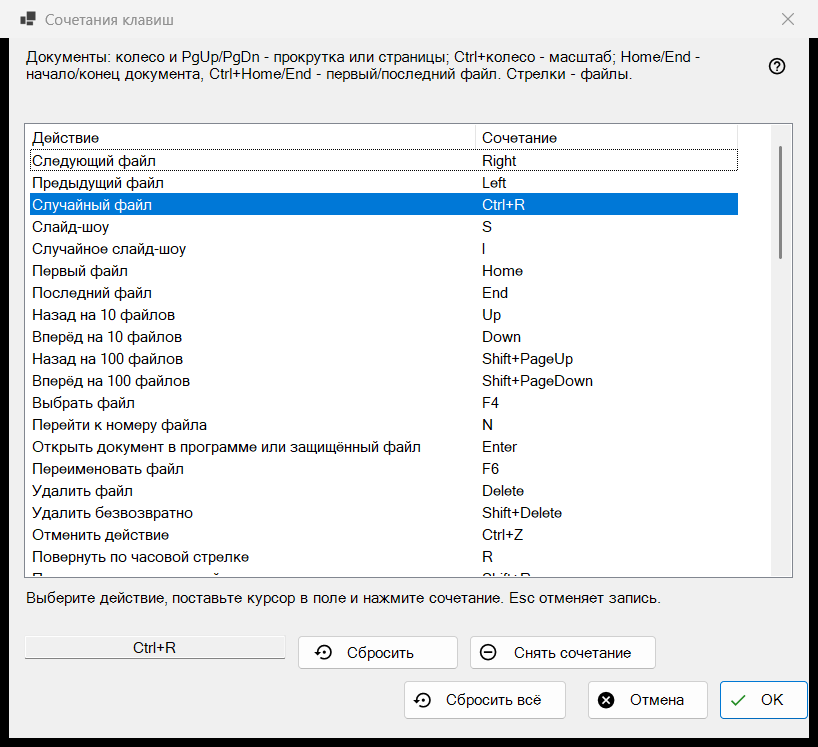
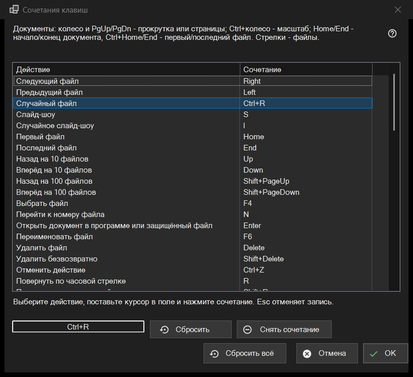

Сочетания клавиш
Назначение
Список всех действий просмотрщика, клавиши которых можно изменить, с тем сочетанием, на которое действие отвечает сейчас. Окно открывается из «Настроек», страница «Файлы и система», кнопкой «Настроить..» в строке «Сочетания клавиш». Окно правит копию: в профиль ничего не попадает, пока вы не нажмёте «ОК».


Порядок действий
- Откройте «Настройки», страницу «Файлы и система», и нажмите «Настроить..» в строке «Сочетания клавиш».
- Выберите действие в списке.
- Щёлкните в поле под списком и нажмите новое сочетание.
- Если оно уже занято другим действием, выберите «Обменять сочетания», «Снять у того действия» или «Отмена».
- Повторите для других действий; при необходимости используйте «Сбросить», «Снять сочетание» или «Сбросить всё».
- Нажмите «ОК», чтобы сохранить изменения, или «Отмена», чтобы отбросить их все.
Элементы окна
Список «Действие» и «Сочетание»
Каждая строка - одно действие и его основное сочетание; у действия без клавиши написано «Не назначено». Десять слотов папок показаны как «Переместить в папку 1..0» и «Копировать в папку 1..0» (цифра перемещает, Shift и цифра верхнего ряда копирует). Некоторые действия отвечают и на дополнительные заводские клавиши (на «Следующий файл» реагируют ещё Пробел и PageDown). В списке показано только основное сочетание, но как только вы назначаете действию новое, все его прежние заводские клавиши перестают работать. Текст над списком перечисляет неизменяемые клавиши для документов (колесо, PgUp/PgDn, Home/End, стрелки), которых в списке нет.
Запись сочетания
Выберите строку, затем щёлкните в поле под списком (или дважды щёлкните по строке) и нажмите клавиши, при желании вместе с Ctrl, Shift или Alt. Поле записывает сочетание целиком, одна клавиша-модификатор сочетанием не считается. Esc выводит из поля, ничего не записывая. Изменение сразу видно в списке, но пока оно только в рабочей копии.
Клавиши, которые назначить нельзя
F1, F10, F11, Esc, клавиши Windows, клавиша Menu, Alt+Tab, Alt+F4 и Ctrl+Alt+Delete принадлежат Windows или самой программе. При нажатии такой клавиши появляется сообщение: «Это сочетание зарезервировано системой или программой и не может быть назначено.» Ничего не меняется.
Сочетание уже занято
Вопрос называет владельца: сочетание X уже назначено другому действию, и показано его название. «Обменять сочетания» отдаёт тому действию сочетание, которое было у текущего (возможно, пустое). «Снять у того действия» оставляет его с пометкой «Не назначено», а сочетание достаётся вам. «Отмена» ничего не меняет.
«Сбросить», «Снять сочетание» и «Сбросить всё»
«Сбросить» возвращает выбранному действию заводскую клавишу. «Снять сочетание» оставляет действие вовсе без клавиши, и заводская клавиша тоже перестаёт работать; так клавишу можно отключить. «Сбросить всё» спрашивает: «Вернуть все сочетания к значениям по умолчанию?» Кнопка «Вернуть к умолчаниям» стирает все ваши изменения в окне, «Отмена» их сохраняет.
«ОК» и «Отмена»
«ОК» сохраняет всю карту клавиш в профиль, и просмотрщик сразу начинает ею пользоваться. «Отмена» закрывает окно и оставляет профиль точно таким, каким он был. Клавиши видео и звука (пауза, звук, громкость, перемотка, темп воспроизведения, кадр за кадром, дорожки) действуют на воспроизводимый файл.